Wolfies Cafe Manly — Beachfront Coffee on North Steyne
Pull up a chair under the purple umbrellas, order a Little Marionnette flat white, and watch the surf roll in. Wolf brought his European kitchen halfway around the world to land right here — 47 North Steyne, Manly Beach.
Our Story
Slovakia. Manly Beach. It Works.
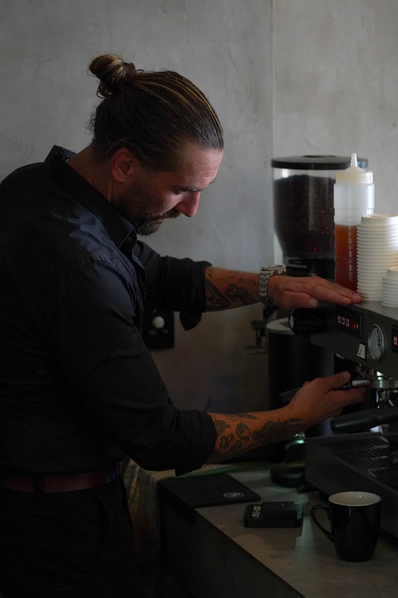
Wolfies is a beachfront cafe and gallery at 47 North Steyne, Manly — one of the Northern Beaches' most iconic spots. Opened in by Wolf, a cafe owner from Slovakia with a very specific idea of what a morning should feel like.
Wolf left Slovakia with a head full of European flavours, a friendship with celebrated artist Viktor Freso, and a vision. When he found a shopfront on North Steyne with the Pacific Ocean staring back through the glass, he stopped looking.
Today, Wolfies is the only place in Manly where you can sip an organic Little Marionnette flat white beside a pink sculpture imported from Central Europe, while a set rolls in thirty metres away.
The food is homemade — dishes Wolf grew up eating, adapted for a morning crowd that just came off the water. The coffee is sourced with the kind of stubbornness only someone who genuinely cares would bother with. And the room stays out of the way and lets the Pacific fill the frame. No wonder Wolfies has become a favourite across Sydney's Northern Beaches — the kind of cafe that's genuinely hard to leave.
More Than a Cafe
A Gallery. A Cafe. One View of the Pacific.
Part cafe, part gallery. A minimalist beachfront space where art, coffee, and the ocean come together.
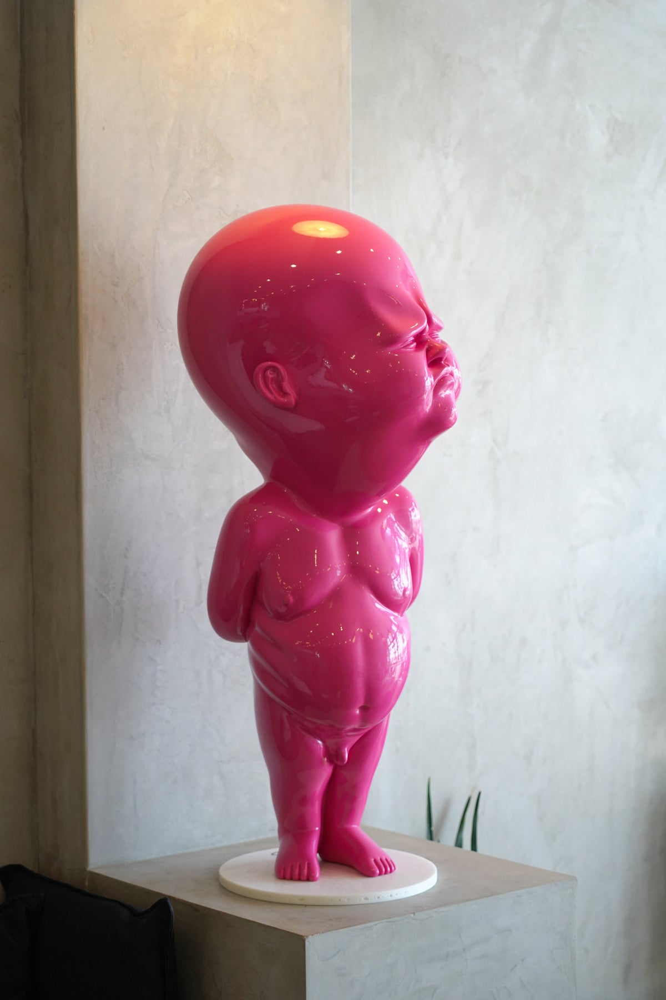
Art & Gallery
We brought a piece of Europe to Manly. Our bright pink sculpture by Viktor Freso, a celebrated Slovak artist, sits at the heart of the cafe. It's unexpected, it's bold, and it's exactly what makes Wolfies different. The cafe doubles as a gallery — a space where art and coffee culture coexist.
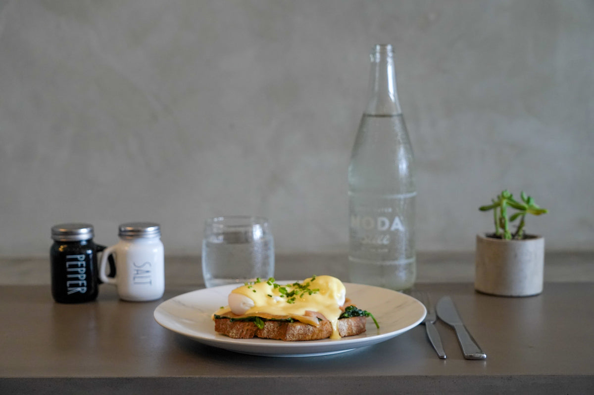
Ocean Views & Minimalist Design
The interior is spare by design — pale walls, dark coffee, and a window big enough to make the Pacific the main feature. Outside, the purple umbrellas are hard to miss. Grab one of those seats by 8am on a weekend and don't let go.
Inside Wolfies
The View From Our Table
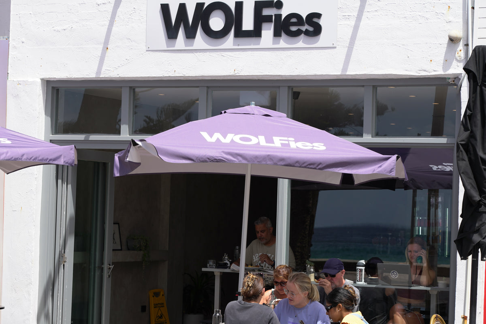
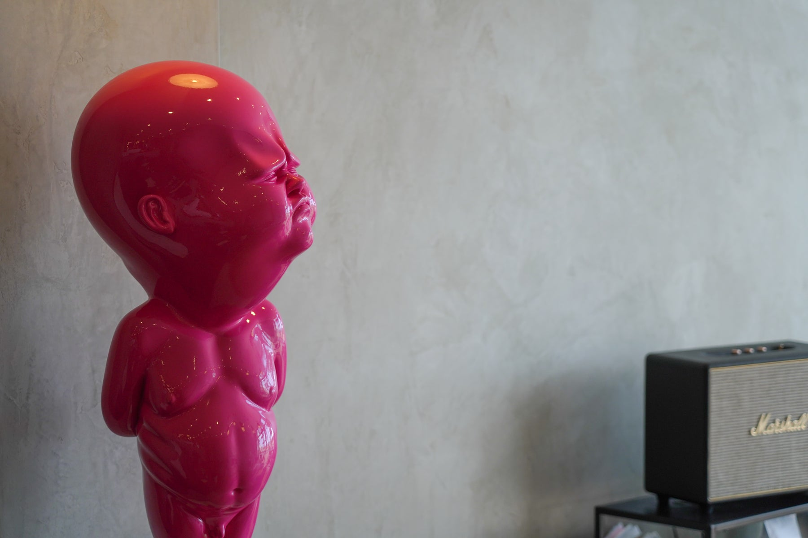
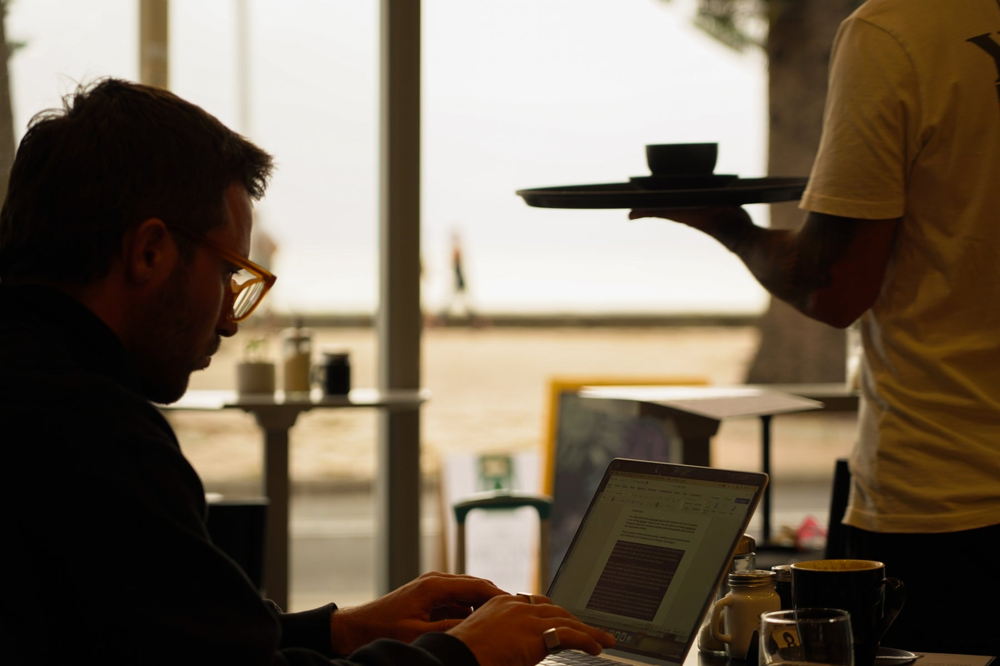
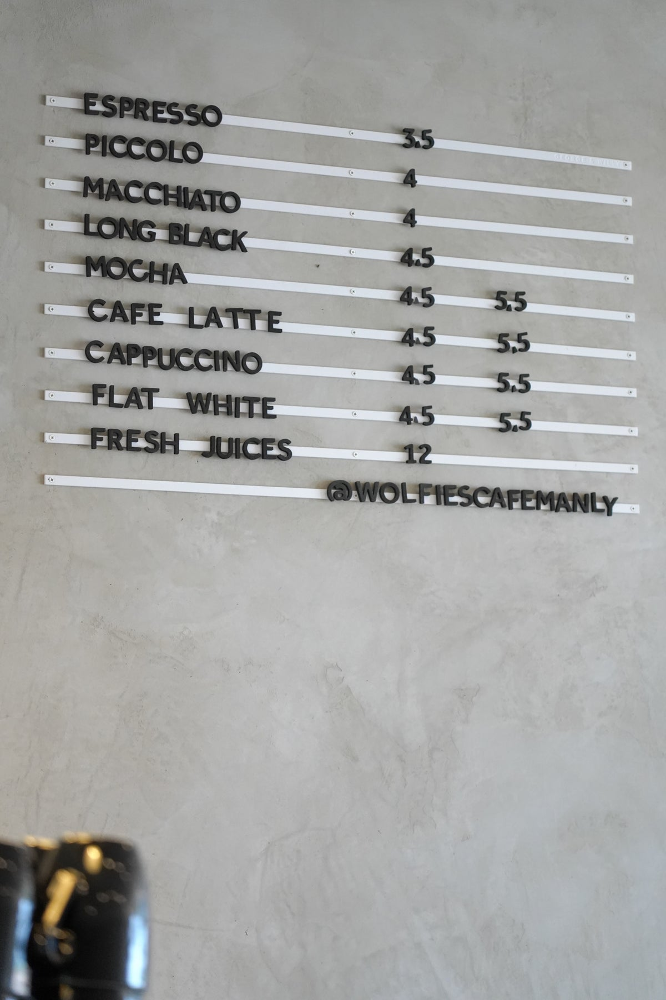
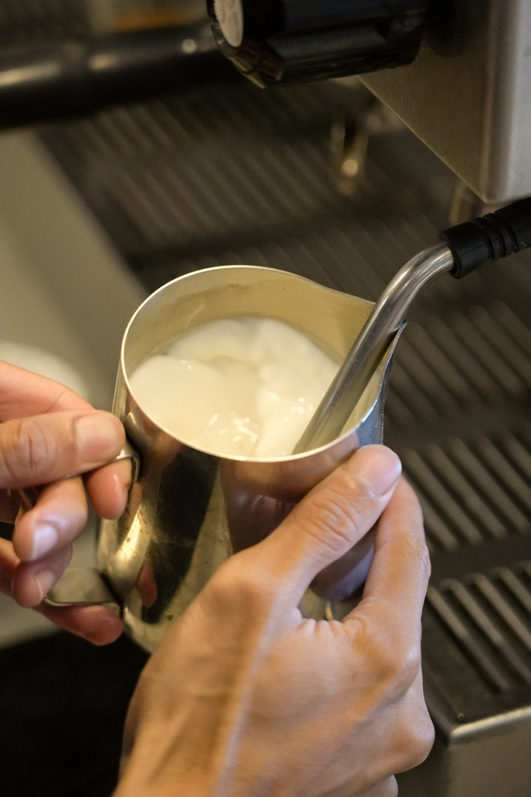
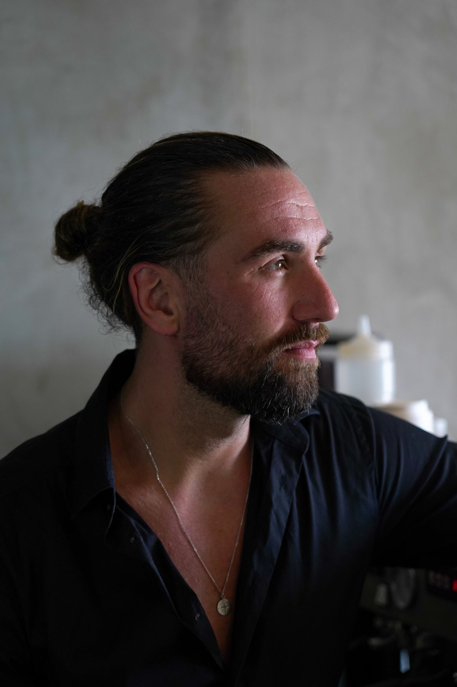
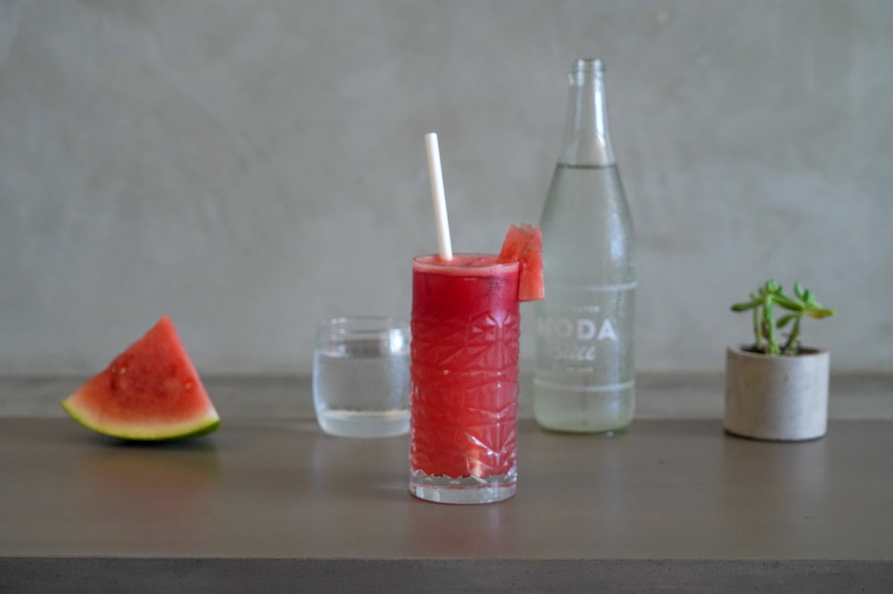
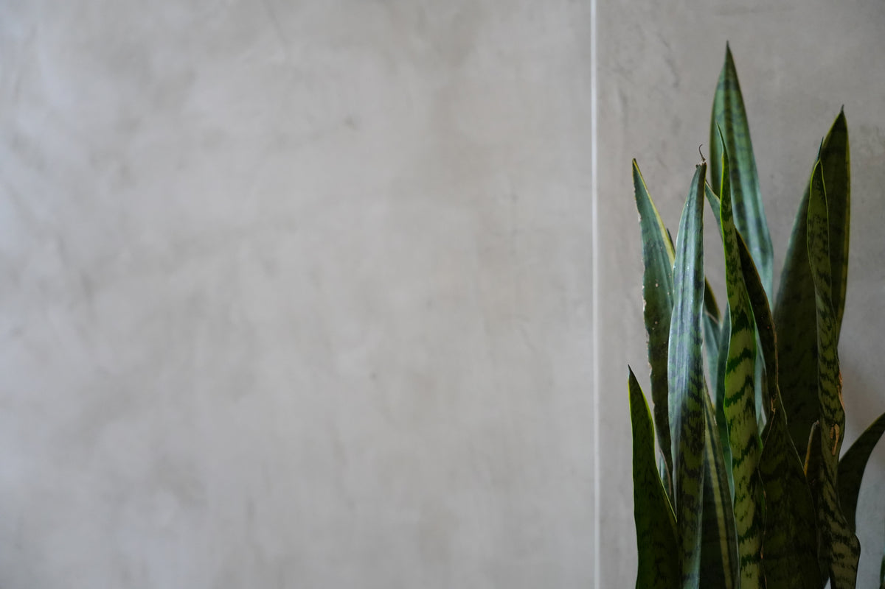
Questions
Good Questions
We're right on the beachfront at 47 North Steyne, Manly NSW 2095. You'll find us just a short walk from Manly Wharf and The Corso, with the ocean quite literally across the road. Look for the purple umbrellas.
We serve organic coffee by Little Marionnette, a Sydney-based specialty roaster. Whether you're after a flat white, latte, long black, cappuccino, espresso, or iced coffee, every cup is made with care using ethically sourced, organic beans.
Yes — and we don't treat it as an afterthought. Several of our dishes are naturally gluten-free or vegan, and our team knows the menu well enough to steer you right. Just ask when you order.
Yes! Our outdoor seating is one of the best spots in Manly. Sit under our signature purple umbrellas with panoramic views of Manly Beach and the Pacific Ocean. There's nothing quite like a morning coffee with the sound of waves in the background.
I'm Wolf, originally from Slovakia. I opened Wolfies in because I wanted the kind of morning I grew up with — good food, strong coffee, something interesting on the walls — just with the Pacific Ocean instead of a Central European square. That's Wolfies.
You can. We have panoramic ocean views from both our indoor and outdoor seating areas. We're positioned right on North Steyne, directly facing Manly Beach. On a good morning, you might even spot dolphins from your table.
Our signature piece is a bright pink sculpture by Viktor Freso, a celebrated Slovak artist. We imported it from Europe as part of our vision to make Wolfies more than a cafe — it's a gallery space where art and coffee culture meet.
Yes. A cafe that's also a gallery, on the Manly beachfront, with a giant pink sculpture as the backdrop — it's a venue that does the work for you. We've hosted private brunches, brand events, and gallery mornings. DM us on Instagram @wolfiesmanly and we'll talk details.
The best way to reach us is through Instagram at @wolfiesmanly. Send us a DM and we'll get back to you. Or better yet, just come visit us at 47 North Steyne, Manly!
Absolutely — the more the better. Outdoor tables, a laid-back beachfront vibe, and a menu that covers all ages and dietary needs. The kids can watch the waves while you actually finish your coffee.
Street parking is available on North Steyne and surrounding streets, but it fills up on weekends. Honestly, the best way to get here is the Manly Ferry from Circular Quay — we're a five-minute walk from Manly Wharf. It's a beautiful ride and you skip the parking hassle entirely.
The Smashed Avo with feta and cherry tomatoes is the crowd favourite — people come back for it. The Eggs Benny on sourdough is a close second. For coffee, ask for a flat white with Little Marionnette beans. And if you're feeling adventurous, the Matcha Smoothie is something else entirely.
We're a daytime cafe, so no alcohol — but our coffee, matcha, and fresh juices more than make up for it. Wolf has plans for evening aperitifs and cocktails down the track, so watch this space.
Visit Us
47 North Steyne. Purple Umbrellas. You'll See Us.
Come Say Hello
☉
Address
47 North Steyne, Manly NSW 2095
Get Directions on Google Maps →
⚛
Instagram
@wolfiesmanly
♦
Website
wolfiescafemanly.com
Nearby Landmarks
We're in the heart of Manly, one of Sydney's Northern Beaches' most iconic spots, just steps from Manly Beach. A short walk from Manly Wharf (where the ferry arrives from Circular Quay), The Corso pedestrian mall, and Manly Surf Pavilion. Whether you're coming off the ferry or just finishing a surf, we're easy to find on the beachfront.